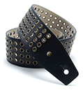
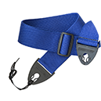
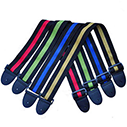

Итак, вы задумались о приобретении ремня для гитары. Казалось бы, идете в магазин и берете тот, что нравится внешне и не слишком бьет по карману. Но не тут-то было!
Ремень для акустической гитары покупается специальный: с отверстием под ушко с одной стороны и веревочками, которые привязываются к головке грифа с другой.
Электрические гитары чаще нуждаются в таких приспособлениях. Выбор ремня для электрогитары не станет проблемой: можно найти любой цвет, фактуру, размер и приемлемую цену. У инструмента уже есть пара ушек, прикрепленных внизу корпуса и возле пятки грифа – на них и надевается аксессуар.
Определившись с тем, как ремень должен крепиться, подумайте, насколько он должен быть надежен и удобен.
Во-первых, материал должен быть прочным. Особенно это касается любителей попрыгать на сцене. Сорвись гитара во время выступления, и испорчен будет не только сам инструмент, но и концерт.
Во-вторых, важно удобство. Лучшим будет тот, который вы не замечаете во время игры. Поэтому стоит обратить внимание на ширину ремня: чем он шире, тем больше площадь давления, а значит, легче будет держать гитару. Нейлоновые и полиэстеровые ремни выпускают шириной около 5 см, кожаные – до 10 см.
Важно, чтобы длина ремня просто и понятно регулировалась, а сам ремень был достаточно мягким, чтобы не портился корпус гитары и не травмировалась кожа музыканта. Полезно будет примерить аксессуар с какой-нибудь гитарой прямо в магазине, почувствовать, приятен ли он на ощупь, хорошо ли скользит, легко ли ходят ползунки.
Если подвести небольшой итог, получится, что:

Cамым долговечным будет кожаный ремень, но покупка обойдется довольно дорого, и такая модель не слишком полезна для покрытия корпуса гитары

Полиэстер намного мягче и дешевле

Нейлон
скользит по плечу и не затруднит ваших движений на сцене

Дизайн ремня, безусловно, важен. Как музыкант имеет определенный стиль в одежде, так и гитарные аксессуары должны соответствовать стилю самого инструмента. Можно выбрать не только цвет, но и фактуру изделия, а потом декорировать его значками и заклепками.
Некоторые интернет-магазины предлагают покупателю заказать гитарный ремень, самостоятельно разработав для него дизайн.
Итак, если вы решили купить ремень для классической или акустической гитары, запомните эти простые правила. Они помогут определиться с выбором аксессуара.

Получите бесплатную онсультацию по телефону 8 (800) 345-34-35
Приобретение доступно через сайт «Музхаус», или с оформлением заказа менеджеру после консультации!